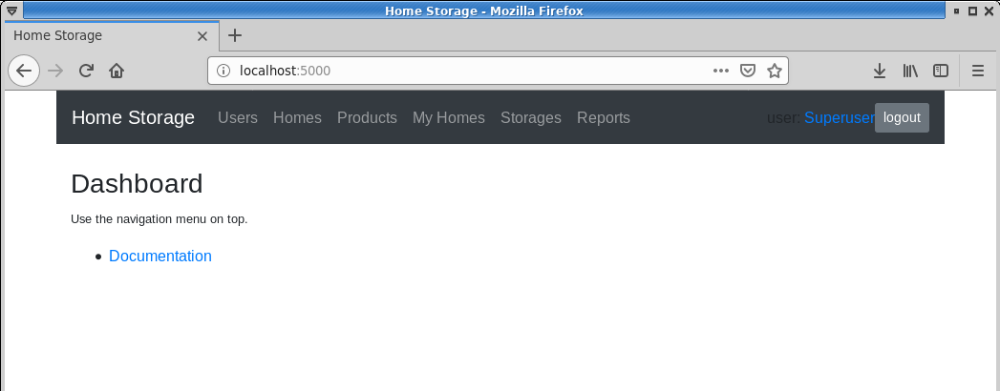
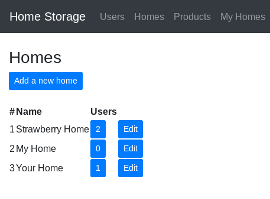
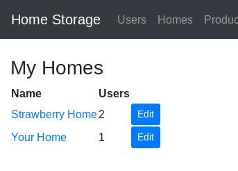
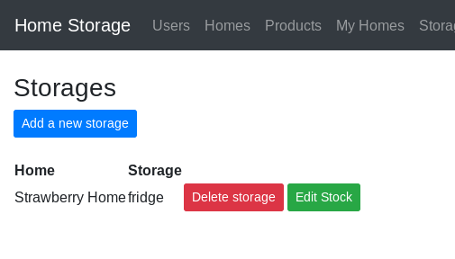

Home Storage requires Python 3.
Home Storage can be obtained from the Github homepage for Home Storage.
Clone the project, or download the zip file and unpack its contents.
Setup a Python virtual environment using the venv Python module:
$ python3 -m venv venv
Take the newly created virtual environment into use:
$ source venv/bin/activate
Install the Python required Python packages listed in requirements.txt:
$ pip install -r requirements.txt
To run Home Storage, use the run.py script:
$ ./run.py
After a fresh install, the system contains one default user named root, with a default password root. The root user has admin rights, and it can not be deleted. It is highly advisable to change the default password to something else.
Use the root user to create new user accounts and new homes.
The screen is divided into two main parts. The top part contains a navigation toolbar, access to the users profile, and a button to logout the current user. The bottom part contains the currently active content.
The number of menu entries in the navigation toolbar depends on the user, superusers have access to more options.
Users are divided into two groups: those who have admin rights and those who don't.
Users with admin rights, aka superusers, can do all the same things as normal users, but in addition the superusers can manage users and homes. The user with user id 1 is a special, and can not be deleted.
User management menu is shown only for superusers, and it contains tools to create new users, edit existing users, and delete existing users.

From the home management, a superuser can create new homes, edit and delete existing homes.
Products are shared amongst all the homes. They can be created, edited, and deleted from the product management.
The default lifetime is used to calculate the best before date.

From the My Homes management menu, users can see the current total stock of items for their homes, and edit the settings for each of their home.
A storage is a place in a home where items are stored. A home can have multiple storages. Storages management menu can be used to create and edit storages. The stock of each storage is managed through the Edit stock option.
There are currently two reports available from the reports menu:
From the reports menu, choose the home and other parameters, and then click the Show -button to generate a report.

Best before report lists items past, or nearing, the best before date of each stored item.
Missing products report lists products whose quantity is below minimum desired defined for the home.